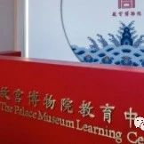

故宫博物院是在明、清两代皇宫——紫禁城的基础上建立起来的国家级大型综合性博物馆，也是全国第一批“全国中小学生研学实践教育基地”“全国爱国主义教育 示范基地”。为了更好的发挥博物馆的社会教育职能，2016 年 12 月故宫博物院利用熙和门南北两侧廊房打造故宫教育中心，为各年龄段公众提供有故宫特色的教育活动。 教育中心总面积 800 余平方米，综合性教学空间 4 个，可容纳 300 余人参与教育活动。
沉浸式教学。以专业性、探索性、互动性、持续性为课程设计原则，研发独特的故宫传统文化教育课程。
主题课授课+互动体验-产品制作主题线路讲解
学校集体（可分班级/年级，集体参与教育活动。需学校开具进入故宫申请公函） 其他对故宫文化有需要研究与探索的亲子活动等等
中小学生故宫社会实践：
包含课程授课费，活动服务管理费，教育产品费，主题线路讲解费及税金（普票。若随行老师需要教育产品，需以材料实际费用另行结算
|
年级 |
课程主题 |
课程形式 |
|
|---|---|---|---|
故宫的西六宫位于中轴线的西侧，分别为咸福宫、储秀宫、长春宫、翊坤宫、太极殿、永寿宫，在明清两朝都是皇帝妃嫔的居所。 晚清时期西六宫的格局改动较大，不再与东六宫对应。 储秀宫原名寿昌宫，嘉靖十四年（1535 年）改称储秀宫。清代曾多次修葺，晚清时为慈禧太后寝宫，逊帝溥仪的皇后婉容也以此为住所。 光绪十年（1884 年）为庆祝慈禧五十寿辰， 耗费白银 63 万两对储秀宫进行大规模整修，现存建筑为光绪十年重修后的形制。 储秀宫的庭院宽敞幽静，两棵苍劲的古柏耸立其中，殿台基下东西两侧安置一对戏珠铜龙和一对铜梅花鹿，为慈禧五十大寿时所铸。翊坤宫原名万安宫，嘉靖十四年（1535 年）改称翊坤宫。 翊坤宫原为二进院，清晚期将其后殿改成体和殿，东西耳房各改一间为通道，使翊坤宫与储秀宫相连，形成四进院的格局，慈禧太后居住储秀宫时在这里接受朝贺。 太极殿原名未央宫，因嘉靖皇帝的生父兴献王朱祐杬生于此，故于嘉靖十四年（1535 年）更名启祥宫，清代晚期改称太极殿。 太极殿原为二进院，清后期改修长春宫时，将太极殿后殿辟为穿堂殿，后檐接出抱厦，并与长春宫及其东西配殿以转角游廊相连，形成回廊，使太极殿与长春宫连接成相互贯通的四进院。 明万历年间，乾清、坤宁两宫火灾，明神宗朱翊钧曾暂居启祥宫。逊帝溥仪出宫前，同治帝瑜太妃也曾居住在太极殿。
东六宫在故宫中轴线的东侧，是一组由六个相同形式的院落组成的建筑。分别为：景仁宫、承乾宫、钟粹宫、景阳宫、永和宫、延禧宫。不像西六宫经历晚清的改建形制变化较大，东六宫比较完整的保存了明朝始建时的格局，更显古朴恬静。由于历史的原因，东六宫的原状陈列都已无存，现在一座座历经沧桑的古老宫院已经成为故宫博物院馆藏国宝的重要展示空间，钟粹宫大圣余音的古琴展、承乾宫金戈铁马钟鸣鼎食的青铜器展、永和宫妙手回春的宫廷医药展、延禧宫异域风情的外国文物展，为众多海内外观众奉上了一道道文化盛宴。室内展品精美绝伦，室外风景同样美丽如画，承乾宫古老的网红梨树，每年春天如期开放，梨花一树春带雨，向人们诉说着这里曾经的主人董鄂妃与顺治皇帝的凄美爱情；日照永和生紫烟， 永和宫的紫藤同样出名，这座东六宫的宫殿又在东六宫的东边一排，华美的万朵紫藤花，恰恰对应了祥瑞的紫气东来；延禧宫未完工的水晶宫中西合璧，建造的进度永远停止在了溥仪退位的年代，这种残缺给予了今人更多的想象空间，每个人都可以放飞自己的心灵，化身成这里的主人，在一百多年前海洋馆的水草中穿行，与鱼儿对视，与历史对话。
御花园明朝称“宫后苑”，清朝改称“御花园”，位于紫禁城中轴线的北端，正南有坤宁门同后三宫相连，左右分设琼苑东门、琼苑西门，可通东西六宫；北面是集福门、延和门、承光门围合的牌楼坊门和顺贞门正对着紫禁城最北的神武门。园墙内东西宽 135 米，南北深 89 米，占地 12015 平方米。园内建筑采取了中轴对称的布局。中路是以重檐盝顶、上安鎏金宝瓶的钦安殿为主体建筑的院落，殿内供奉水神真武大帝。东西两路建筑基本对称，东路建筑有御景亭、摛藻堂、浮碧亭、万春亭、绛雪轩；西路建筑有延辉阁、位育斋、澄瑞亭、千秋亭、养性斋，还有四神祠、井亭、鹿囿等。这些建筑绝大多数为游憩观赏或敬神拜佛之用，唯有摛藻堂从乾隆时起，贮藏《四库全书荟要》，供皇帝查阅。御花园建筑布局对称而不呆板，舒展而不零散。以钦安殿为中心，两边均衡地布置各式建筑近 20 座，无论是依墙而建还是亭台独立，均玲珑别致，疏密适当。园中奇石罗布，佳木葱茏，其古柏藤萝，将花园点缀得情趣盎然。在观赏御花园景色的同时，人们还可以留意脚下，园内的石子路古朴别致，以不同颜色的细小鹅卵石精心铺砌而成 900 余幅不同的图案，有人物、花卉、景物、戏剧、典故等，沿路观赏，妙趣无穷。
北京，拥有三千多年建城史、八百六十多年建都史的悠久古都，更是世界历史文化名城，就像一首歌里唱的“走遍了南北西东许多的名城，我还是最爱我的北京！”伟大的北京，最浓墨重彩的一笔莫过于纵贯整个老北京城的南北中轴线，这条中轴线南起永定门，北至钟鼓楼， 直线距离 7.8 公里。7.8 公里中轴线的核心与精华，非故宫段莫属，从午门，到太和门，到太和、中和、保和三大殿，再到乾清门和乾清宫、交泰殿、坤宁宫、再到坤宁门、御花园、神武门，故宫最高大的城门，最恢宏的宫殿，最神秘的寝宫，最精美的花园无不坐落在中轴线上。中轴线好似紫禁城的脊梁，鲜明地突出了九重宫阙的位置，体现了古代帝王位居天下之中，“唯我独尊”的思想。着名建筑大师梁思成先生亦曾经说：北京的独有的壮美秩序就由这条中轴线的建立而产生。今天，当我们徜徉于故宫中轴线上，矗立于太和殿的阶下，依然可以感受到“此处渐近天廷地，静心可闻风雷声”，让我们走进故宫，行走在中线上，共同感受中华文化的博大精深与历久弥新！
故宫的三大殿是指太和、中和、保和三大殿，三大殿共同坐落在 8.13 米高的“土”字形汉白玉须弥座之上，是明清两代皇帝行使权力和举行重大庆典活动时使用的宫殿。太和殿是三大殿中最大的宫殿，屋顶为最高等级的重檐庑殿顶。太和殿面阔 11 间，进深 5 间，长 64米，宽 37 米，建筑面积 2377 平米，大殿净高 27 米，连同台基通高 35.05 米，是皇帝举行“元旦、冬至、万寿、登极、大婚”等典礼时最重要的宫殿。中和殿为四方形，面阔与进深均为 5 间，形状最独特，体积也最小，是皇帝去太和殿大典之前休息和接受典礼执事官员的朝拜的地方。保和殿位居三大殿最后，屋顶为重檐歇山顶，面阔 9 间，进深 5 间。太和殿大典前，皇帝常在保和殿更衣，册立皇后、皇太子时，皇帝在这里受贺。每年除夕、正月十五， 皇帝在保和殿赐宴外藩王公及一二品大臣，科举考试最高等级的殿试也于保和殿举行。三大殿是中国明清官式建筑的典型，体现了中国古代宫殿建筑天人合一的思想和劳动人民的勤劳与智慧！
故宫的后三宫是乾清宫、交泰殿、坤宁宫三座宫殿及其相关区域的总称。此区域平面呈矩形， 南北长约 220 米，东西宽约 120 米，占地面积 26000 平米，周围以廊庑相连，共包含大小房屋 420 余间。乾清宫明清两代曾数次因火灾而重建，现有建筑为清代嘉庆三年（1798 年） 所建。大殿上覆黄琉璃瓦重檐庑殿顶，座落在单层汉白玉石台基之上，面阔 9 间，进深 5 间，建筑面积 1400 平米，自台面至正脊高 20 余米 ，檐角脊兽 9 个。乾清宫为明代皇帝和清代顺治、康熙皇帝的寝宫，从雍正皇帝开始移居养心殿，不再居住在乾清宫，但仍以这里为礼制上的寝宫，进行内廷典礼并进行一些重要的召见活动。每日清晨，皇帝还要到乾清宫阅读先皇的圣讯，以示敬天法祖。交泰殿位于乾清宫与坤宁宫中间，取《易经》中乾坤交泰之意。这里不仅是皇后在节庆时接受礼贺的地方，也是清代象征皇权的二十五方宝玺的贮存之地 。交泰殿规制与前朝中和殿类似，平面为方形，深、广各为 3 间，殿内中为皇后宝座， 两侧陈列有大型计时器自鸣钟和铜壶滴漏。坤宁宫面阔 9 间，进深 3 间，黄琉璃瓦重檐庑殿顶。明代为皇后的寝宫。清顺治时期按满洲风俗进行了改建，东暖阁做为皇帝大婚的洞房， 但只使用三天，皇后平日并不居住在此。改建后，西暖阁则主要是作为萨满教祭祀的场所。现在，坤宁宫依然保存了清末光绪皇帝大婚的洞房和萨满教祭祀的神秘场景。
故宫的外西路主要是指慈宁宫区域，按照所指范围不同，慈宁宫区域又有狭义和广义之分。狭义的慈宁宫，仅指慈宁宫和它后面的大佛堂这一院落，广义的慈宁宫区域则又包含了它西侧的寿康宫和南侧的慈宁宫花园。在慈宁门前面，陈列着一对有别于其他宫门铜狮的鎏金麒麟，慈宁门和慈宁宫的匾额为独特的满蒙汉三种文字书写，这是因为清朝太后中以孝庄为代表的蒙古族血统者较多的缘故。慈宁宫区域明清两代主要是太后太妃生活居住的场所，最有名的主人要数明朝万历皇帝的母亲李太后、清朝顺治皇帝的母亲孝庄太后和乾隆皇帝的母亲崇庆太后。孝顺的儿皇对母亲的照顾十分殷勤周到，闲暇之余，礼佛祈福就成为这些老太后重要的日常活动，这也是慈宁宫一带佛堂林立的重要原因。除了规模最大的大佛堂，还有慈宁宫花园中慈荫楼、咸若馆，以及六品佛楼宝相楼和供奉数万尊擦擦佛的吉云楼。寿康宫既属于慈宁宫区域，又自成一体，是乾隆皇帝专为生母崇庆太后居住颐养而建造的，“寿康” 一词出自《尚书》，意为长寿健康。居住在这里的崇庆太后在儿皇乾隆的百般尊养下，果然像宫殿的名字一样，健康长寿的活到了 86 岁！综合幸福指数在历代太后中堪称第一，谱写了乾隆盛世灿烂的夕阳红！